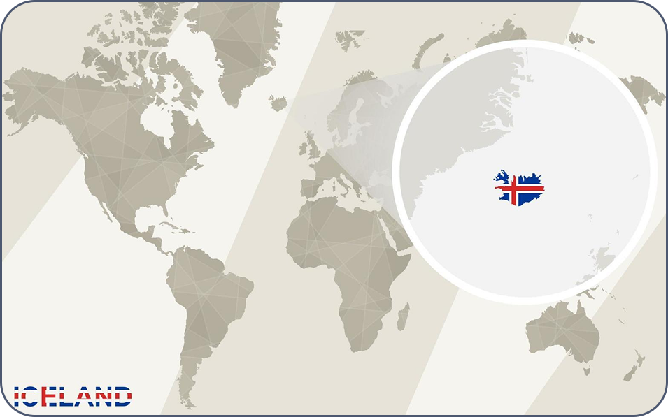
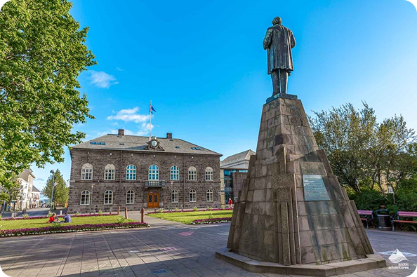
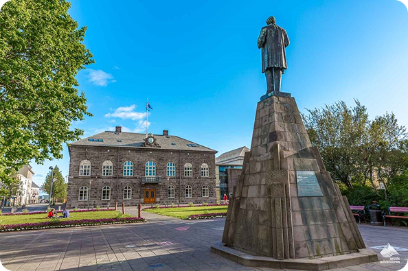

Accueil
Bienvenu en République d’Islande (Iceland / Ísland)
L'Islande est un pays insulaire situé dans l Atlantique Nord, très riche géologiquement (volcans, glaciers), peu peuplé, et très tourné vers les énergies renouvelables.
Office Du Tourisme

L'Islande est un pays insulaire situé dans l Atlantique Nord, très riche géologiquement (volcans, glaciers), peu peuplé, et très tourné vers les énergies renouvelables.
Située entre l’océan Atlantique Nord et l’océan Arctique, sur la dorsale médio-atlantique.
Superficie d’environ 103 000 km².
Pays très volcanique, avec de nombreux volcans actifs et des glaciers (par exemple le Vatnajökull)
 

Reykjavik